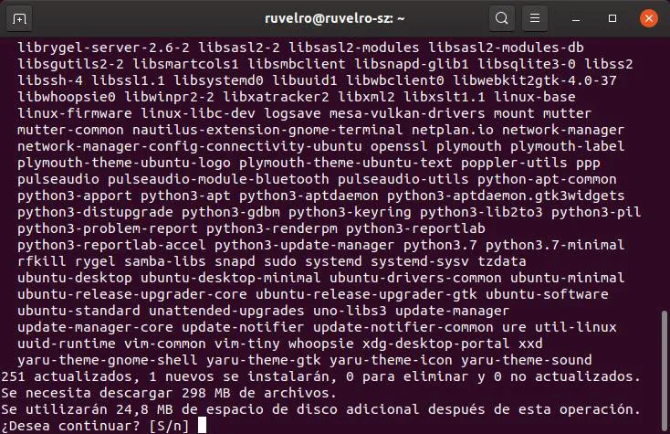
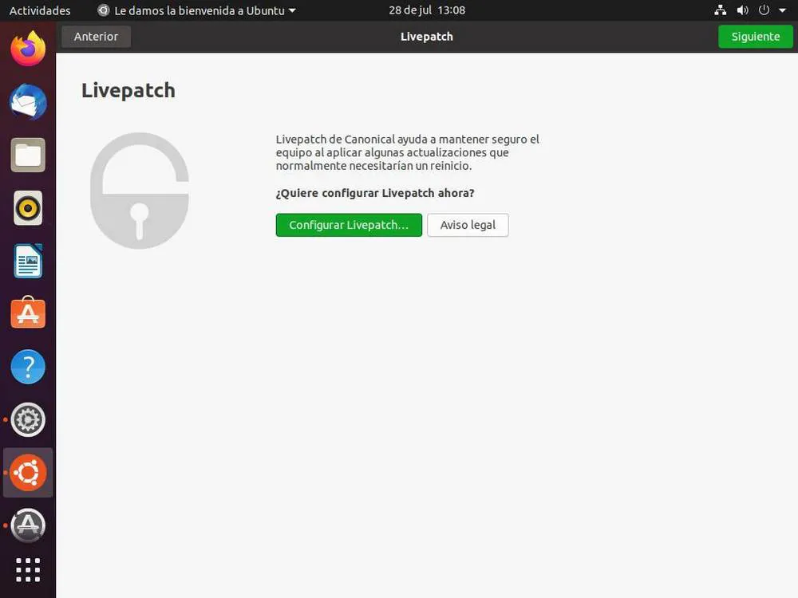

Actualizar Parches
Lo primero que deberíamos hacer una vez finalizada la instalación es asegurarnos de que la distro está al día,
con todos los parches instalados. Esto podemos hacerlo fácilmente abriendo un terminal y ejecutando el siguiente
comando:
sudo apt update && sudo apt upgrade

Cuando acabemos de bajar las actualizaciones ya tendremos nuestro sistema al día.
Activar los LivePatch
LivePatch es una función de Ubuntu que nos va a permitir instalar parches de seguridad en
la distro «en caliente», es decir, sin tener que reiniciar el ordenador para completar el
proceso de actualización. Esto es muy útil sobre todo cuando trabajamos con el PC, ya que
podremos estar siempre protegidos sin necesidad de tener que interrumpir el funcionamiento
del PC. Podemos encontrar esta opción buscando «Livepatch» en el lanzador de programas. Eso sí,
para poder usarlo necesitaremos una cuenta de Ubuntu One, cuenta que podemos crear de manera gratuita.

Instalar los programas que queramos
Ubuntu viene por defecto con una gran cantidad de software instalado por defecto, software gracias al
cual vamos a poder usar el sistema sin problemas. Sin embargo, si alguna de las aplicaciones que vienen
instaladas por defecto no nos gusta (por ejemplo, Firefox), vamos a poder sustituirlas por los programas
que queramos, en este caso, Google Chrome o Chromium.
Podemos bajar instaladores en formato .deb desde las webs, instalarlos a través de «apt» desde el terminal,
o buscarlos en la tienda de software de Ubuntu. Las últimas versiones de Ubuntu también nos permiten instalar
software a través de sus paquetes Snap.

De esta manera podremos adaptar nuestro Ubuntu a nuestras necesidades,
y trabajar con él de la forma más productiva posible.